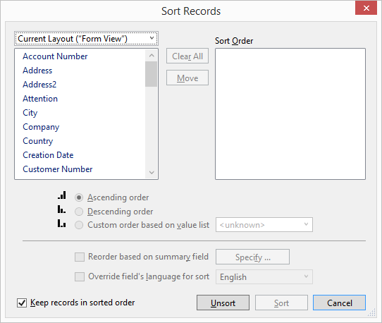
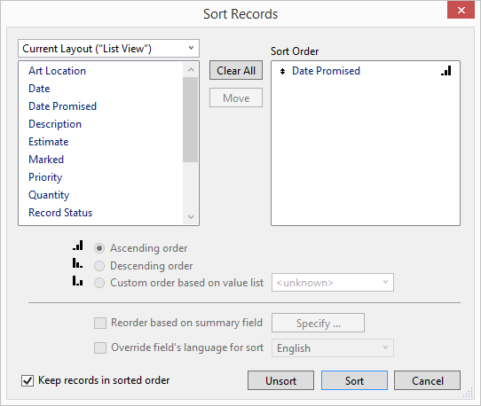

Sort Records
The Sort function allows you to sort any grouping of records by one or more fields.
-
The resulting lists may be sorted in ascending or descending order. This can be useful in printing address labels, viewing items or framing materials, etc.
-
Most areas in FrameReady contain a Sort button (when in List View). Only the Contacts file has a Sort button in the Form View.
Tip: In all files (except the Main Menu), the Sort feature is available from the Menu Bar at the top of the screen by clicking on Records > Sort Records.
The Sort Records Window Explained

Current Layout Drop-down
-
Shows the current File from which the fields are being pulled. Click the drop down arrow to access other sources.
-
All the fields associated with the source are listed in this window. Use the scroll bar to locate a field in the alphabetical list. A field must be highlighted in order to move it to the Sort Order window.
Ascending / Descending Order Radio Buttons
-
Radio buttons for Ascending and Descending allow you to sort individual fields by different orders.
Sort Order Pane
-
The fields listed here determine how the results are sorted.
-
The Ascending or Descending icon indicates the order in which to sort the field.
-
Click the Move icon to drag a field up or down the Sort Order list.
Clear All Button
-
Remove all items in the Sort Order pane.
Move Button
-
The Move icon can be clicked on to drag a field up or down the sort order list.
-
When an item in the Sort order window is highlighted, the Move button changes to Clear and can be used to remove one field from the sort order. When a field is highlighted on the left side of the screen, the button will display as Move and can be used to move the field into the sort order window.
Sort Button
-
The Sort button will sort the records on your screen by the fields listed in the sort order window.
How to Sort Records
How to Select an Item
-
Switch to List View and click the Sort button.
The Sort Records dialog box appears.

-
In the left list, under Current Layout, choose the attribute you wish to sort by.
The left column contains the list of field names found in the file. You can only sort the records by the values found in the fields in the current file.
When an item is highlighted on the left side, then the Move button is enabled. -
Click the Move button.
The selected item moves to the Sort Order pane on the right and appears at the bottom of the list. -
When ready, click the Sort button.
How to Clear a Single Item
-
In the Sort Order list (on the right), click the item to be removed.
-
Click the Clear button (in the same location as Move).
The item is removed from the Sort Order list.
How to Move Items in the Sort Order
-
When sorting a group of records by multiple criteria, the order in which the items are listed in the Sort Order shows the hierarchy of the sort.
-
For example, if Total Sales is listed above NameLast, then the records are sorted first by the dollars spent, then all customers with the same dollar spent will be sorted by last name.
-
Items can be moved up or down on the Sort Order list.
-
Place your cursor over the arrow tool (diamond-ish shape) on the left side of the highlighted field.
The cursor changes to an up-and-down arrow divided by two lines. -
Click-and-drag the item (up or down) to a new position in the list.
How to Change The Ascending / Descending Order
-
Click on the item in the Sort Order list.
-
Select the radio button to identify Ascending or Descending order. Custom order based on value list is also available but not covered here.
The icon to the right of the Sort Order item displays the ascending or descending order to be used for that item.
© 2023 Adatasol, Inc.